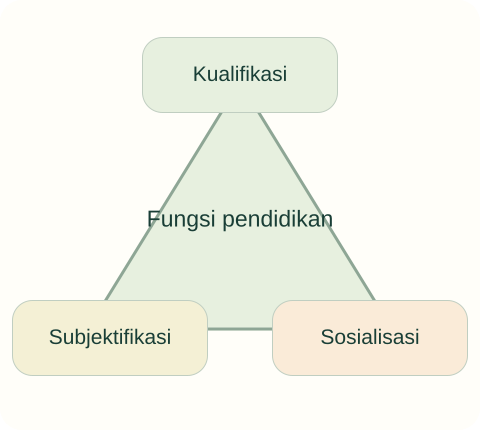

Tujuan pembelajaran
- Membedakan tujuan, fungsi, hasil, dan indikator
- Menggunakan tiga fungsi pendidikan menurut Biesta
- Merumuskan bukti sesuai tujuan
Tujuan, fungsi, dan hasil
Tujuan menyatakan arah yang hendak dicapai. Fungsi menjelaskan peranan pendidikan bagi individu dan kehidupan bersama. Hasil menerangkan perubahan yang sungguh teramati. Kegiatan adalah sarana menuju tujuan dan indikator adalah petunjuk yang membantu membaca hasil. Dalam bermain pasar, kegiatan membeli dua buah dapat mendukung tujuan memasangkan jumlah dengan benda. Salah satu indikatornya ialah anak memilih dua buah saat diminta, termasuk ketika buah diletakkan dalam susunan yang berbeda.
Tiga fungsi pendidikan menurut Biesta
Biesta (2009) membedakan kualifikasi, sosialisasi, dan subjektifikasi. Kualifikasi berhubungan dengan pengetahuan dan kecakapan, misalnya menggunakan bilangan untuk membagi benda. Sosialisasi berhubungan dengan masuk ke dalam praktik dan aturan bersama, misalnya memahami giliran. Subjektifikasi memberi perhatian pada kemungkinan seseorang bertindak sebagai subjek yang punya pertimbangan dan tanggung jawab. Pada situasi giliran, anak dapat mengusulkan memakai keranjang secara bergantian karena memahami temannya juga membutuhkannya. Ketiganya bisa hadir bersama dan kadang menarik kegiatan ke arah berbeda. Pembagian Biesta dipakai untuk menimbang tujuan, bukan sebagai skala pengukuran anak.
Dari tujuan nasional ke kelas PAUD
Pasal 3 UU No. 20 Tahun 2003 memberi arah pengembangan kemampuan dan pembentukan watak dalam kehidupan bersama. Permendikdasmen No. 10 Tahun 2025 dan No. 12 Tahun 2025 memberi rujukan standar yang perlu dibaca pada bagian PAUD. Di kelas, tujuan yang luas seperti tanggung jawab perlu diterjemahkan ke keadaan yang dapat dipahami anak. Guru dapat menyiapkan alat bersama, menentukan tempat pengembalian, dan memperhatikan apakah anak merawat alat yang dipakai dengan bantuan yang berangsur disesuaikan.
Memilih bukti yang sepadan
Kartu huruf memberi informasi tentang pengenalan lambang tertentu. Bukti tentang bahasa juga dapat diperoleh dari percakapan, cerita ulang, dan penggunaan tulisan dalam permainan. Untuk tujuan menyelesaikan konflik, amati cara anak menyatakan keinginan, mendengar usulan, atau menerima bantuan. Hasil satu kegiatan bersifat terbatas. Catatan pada beberapa kesempatan membantu guru membedakan respons sesaat dari perkembangan yang mulai terlihat.
Diagram konsep

Apa yang hilang jika mutu RA dinilai dari kelancaran membaca saja?

Sebuah RA memakai kemampuan menyebut huruf sebagai tolok ukur utama. Di kelas, seorang anak cepat mengenali kartu huruf. Ketika dua anak ingin memakai keranjang yang sama, guru melihat salah satunya belum dapat meminta giliran.
- Adegan mana yang memperlihatkan penggunaan lambang?
- Di mana ada kesempatan merundingkan giliran?
Pembahasan kasus
RA dapat tetap mencatat pengenalan huruf dan menambah bukti yang langsung terkait dengan tujuan sosial. Pada kasus keranjang, ucapan “boleh aku pakai setelah kamu?” memberi informasi yang berbeda dari jawaban benar pada kartu huruf. Keduanya membantu guru menentukan pengalaman berikutnya.
Buka contoh penalaran setelah mencoba
Tulis dua tujuan dari adegan berbeda dan pasangkan dengan buktinya.
Menyebut huruf memberi bukti pengenalan lambang. Mengusulkan urutan memakai mainan memberi bukti perundingan.
Latihan terbimbing
Ubah “anak menyelesaikan dua lembar kerja” menjadi tujuan belajar yang spesifik. Beri satu contoh pengalaman dan satu indikator yang langsung sesuai dengan tujuan.
Latihan mandiri
Jelaskan kepada keluarga dalam dua paragraf bagaimana satu kegiatan bermain dapat membawa dua tujuan berbeda. Beri satu bukti untuk setiap tujuan.
Lihat pembahasan
anak mengusulkan urutan pemakaian keranjang dan menanggapi usul temannya
Usul dan tanggapan menunjukkan proses merundingkan pemakaian bersama.
Refleksi calon pendidik
Bukti apa yang mudah dicatat di kelas tetapi hanya mencakup bagian kecil dari tujuan pendidikan?
Catatan hanya disimpan di peramban ini. Tidak dikirim kepada dosen.
Referensi dan bacaan pendamping
- Republik Indonesia. (2003). Undang-Undang Nomor 20 Tahun 2003 tentang Sistem Pendidikan Nasional.Fokus Pasal 1, 3, 13, dan 28. Status UU secara keseluruhan tidak berarti seluruh pasal bebas perubahan atau putusan pengadilan.
- Biesta, G. (2009). Good education in an age of measurement: On the need to reconnect with the question of purpose in education. Educational Assessment, Evaluation and Accountability, 21, 33–46.Kerangka konseptual untuk tiga fungsi pendidikan.
- Kementerian Pendidikan Dasar dan Menengah. (2025). Peraturan Menteri Pendidikan Dasar dan Menengah Nomor 10 Tahun 2025 tentang Standar Kompetensi Lulusan pada Pendidikan Anak Usia Dini, Jenjang Pendidikan Dasar, dan Jenjang Pendidikan Menengah.Gunakan bagian PAUD. Capaian tidak ditafsirkan menjadi ujian kelulusan akademik bagi anak.
- Kementerian Pendidikan Dasar dan Menengah. (2025). Peraturan Menteri Pendidikan Dasar dan Menengah Nomor 12 Tahun 2025 tentang Standar Isi pada Pendidikan Anak Usia Dini, Jenjang Pendidikan Dasar, dan Jenjang Pendidikan Menengah.Ruang lingkup PAUD tidak identik dengan pemisahan mata pelajaran sekolah dasar.